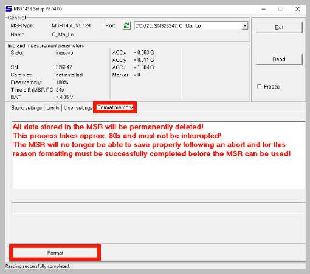
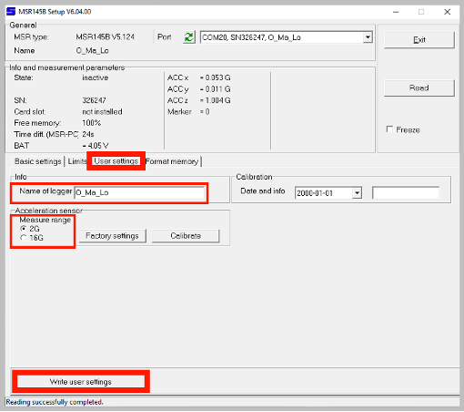
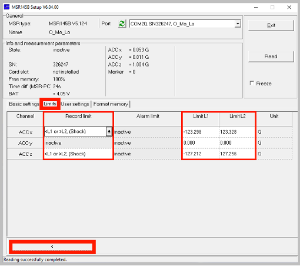
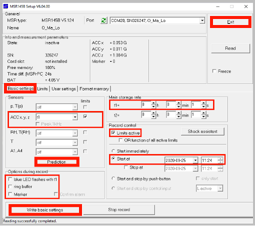

3 Configuration
Prior to each deployment of the Mini Buoy, the data logger will need to be fully charged, have a full memory, and be correctly configured according to the user’s requirements. The following section describes how to configure the MSR145W B4 (used in both the B4 and B4+ Mini Buoy designs) and HOBO Pendant G acceleration data loggers.
3.1 MSR145
The MSR145W B4 comes with a USB charging cable. Free software to configure the logger can be downloaded here. At present, the logger is only compatible with a Windows PC. To configure the MSR145W B4:
- Download and install the MSR software
- Connect a logger to a Windows PC. A yellow LED will light up on the logger, indicating the internal battery is being charged. The light will extinguish once the battery is fully charged
- Open the MSR software
- Double-click
Setup

- Select the
Format memorytab - Click
Format. This will delete any data stored on the logger

- Once formatting is complete, select the
User settingstab - Set the acceleration sensor measure range to
2G - You can define a name for the logger under
Name of logger - Click
Write user settings

- Under
Record control, check theLimits activebox - Select the
Limitstab. We can use limits to effectively disable the X and Y sensors by setting unrealistically high acceleration limits. This will allow your logger to store more Y acceleration data. - For the ACC x channel, select
<L1 or >L2, (Shock)from the record limit drop-down menu (click on the cell to make the drop-down menu visible) - For the ACC z channel, select
<L1 or >L2, (Shock)from the record limit drop-down menu (click on the cell to make the drop-down menu visible) - Set the corresponding
Limit L1to -999 andLimit L2to +999. The MSR software will default to the maximum possible range - Make sure there are no limits set on the ACC y channel by selecting
inactivefrom the record limit drop-down menu - Click the
<button in the bottom-left of the window

- Select the
Basic settingstab - Under
Sensors, selectt1from theACC x, y, zdrop-down menu - Under
Main storage rate, sett1=to the desired sampling rate in seconds- The Mini Buoy has been calibrated to accept sampling rates between 1 and 10 seconds. Refer to the table in Chapter 1 for sampling duration (this is more accurate than the
Predictiontool that underestimates memory capacity as it does not take into account the limit settings).
- The Mini Buoy has been calibrated to accept sampling rates between 1 and 10 seconds. Refer to the table in Chapter 1 for sampling duration (this is more accurate than the
- Check the
Start atbox, and set the date and time shortly after your planned deployment - Under
Options during record, uncheck all options. This will extend the battery life of the logger - Click
Write basic settingsto upload your settings to the logger - Click
Exitand disconnect the MSR145W B4 logger from the computer - A blue light will begin to flash, confirming the logger is primed and ready to begin logging when the start date and time is reached

3.2 HOBOware
The Pendant G Data Logger comes with the free HOBOware software to configure the logger. HOBOware is compatible with Windows and macOS operating systems. To configure the HOBO Pendant:
- Download and install the free HOBOware software
- Connect a logger to a computer via the HOBO Optic USB Base Station
- Open the HOBOware software
- Click the
Select Devicedrop-down menu , and tick the USB or serial port tabs in congruence with how you connected the data logger to the computer
, and tick the USB or serial port tabs in congruence with how you connected the data logger to the computer - Select the
Launchicon , a window will pop open where you can set a name for the logger under the
, a window will pop open where you can set a name for the logger under the Namefield. - In the
Sensorstab and in theConfigure Sensors to Logsection, check theX-Axis Acceleration (+/- 3g)box - From the
Deploymentstab, set theLogging Intervalto the desired sampling rate using the drop-down menu. Increasing the sampling rate will increase the logging duration (calculated based on the logging rate and battery status of the device).- The Mini Buoy has been calibrated to sampling rates of 1 minute, thus, this is the recommended sampling rate setting, rendering 45 logging days at full battery (refer to the table in Chapter 1 for other sampling rates that can be used with Hobo pendant G loggers).
- In the
Deploymentstab, set theStart Loggingdate and time for shortly after your planned deployment
- Click
Delayed Startand disconnect the Pendant logger from the computer.